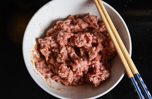
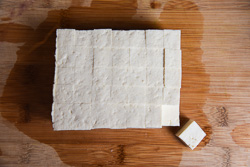
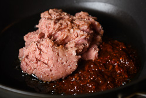
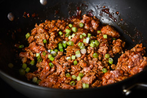
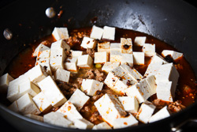
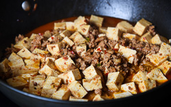

Mapo doufu or Mapo tofu (麻婆豆腐) is a popular Chinese dish from Sichuan province. It consists of tofu set in a spicy sauce, typically a thin, oily, and bright red suspension, based on douban 豆瓣 (fermented broadbean and chili paste) and douchi 豆豉 (fermented black beans), along with minced meat, usually pork or beef. Variations exist with other ingredients such as water chestnuts, onions, other vegetables, or wood ear fungus.
How to Make Sichuan Ma Po Tofu (Authentic) 麻婆豆腐
Ingredients
Silken Tofu: 1 lb 4 oz or 567 g
Chili Oil: 2 tsp
Fermented Black Beans: 2 tbsp
Dou Ban Jiang: 2 1/2 tbsp
Sichuan Peppercorn Oil: 1 tsp
Sichuan Pepper Corn: 1 tsp (crushed)
Red Pepper Powder/Chili Powder: 1 tbsp
Ginger: 1 1/2 tsp
Garlic: 4 to 5 cloves or 1 1/2 tbsp
Spring Onion: 3 sprigs
Soy Sauce: 1 tsp
Sugar: 2 tsp
Sesame Oil: 1 tsp
Chicken/Vegetable Stock or Water: 1 cup or 237 mL
Salt for boiling water: 1 tsp
Potato Starch: 1 tsp
Water: 1 tsp
Instructions
Combine ground pork, cooking wine, soy sauce, and ginger in a bowl. Mix well.
Combine cornstarch with 1 tablespoon water in a small bowl. Mix well and set aside.
Cut and prep tofu and herbs.


Heat vegetable oil and Sichuan peppercorns in a large nonstick skillet over medium high heat. When the Sichuan peppercorns turn dark brown and crispy, scoop them out with spatula and transfer into a bowl layered with paper towel to soak extra oil. Save to use for garnish the dish.
When oil is hot, add ground meat and Doubanjiang. Stir-fry over medium heat with a spatula, until pork is evenly coated with Doubanjiang. Add green onion and stir fry for another minute.


Spread tofu evenly on top of ground pork (*See footnote 2). Add chili oil, five-spice powder, and sugar. Pour in water and cook until bringing to a simmer. Simmer, covered, over low heat for 10 to 15 minutes, until tofu becomes tender and the sauce has reduced to half the original amount. Taste the tofu with some broth (be careful, it will be very hot!). Adjust seasoning by adding salt. If the dish is too spicy, add another teaspoon of sugar. Gently mix well with spatula.


Meanwhile, ground the fried Sichuan peppercorns (you used when heating up the oil) in a coffee grinder or by using mortar and pastel.
Mix cornstarch water again until fully dissolved and swirl it into the skillet. Gently stir a few times with a spatula, until sauce thickens. Turn off heat and transfer everything to a bowl.
Garnish with green onion and a small pinch the ground Sichuan peppercorns, if using. Serve warm over steamed rice or by itself as main.